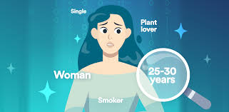

How AI Decides Who Gets Ads: A look at Targeted Marketing
Advertising has always been about reaching the right audience at the right time, but with AI targeted marketing, that process has become more precise and controversial than ever before. From social media to search engines, AI determines who sees which ads, but does it always get it right? And what does that mean for businesses and consumers alike?
To find out, I explored how AI powered ad targeting works, where it succeeds, and where it falls short.
How AI Determined Ad Placement
At its core, AI advertising relies on massive amounts of data. Every click, search, purchase, and interaction feeds into machine learning models that predict user behavior. These models categorize individuals based on demographics, interests, online activity, and even emotional responses. The goal? To serve the most relevant ad to the most likely buyer at the optimal moment.
Here’s a breakdown:
- Data Collection: AI gathers information from browsing history, social media interactions, location tracking, and purchase history.
- Audience Segmentation: The AI sorts users into segments based on shared behaviors, such as “tech enthusiasts,” “frequent travelers,” or “new parents.”
- Prediction Models: Machine learning algorithms analyze past behaviors to predict what ads a user is most likely to engage with.
- Real Time Bidding: When you load a webpage or scroll through social media, AI instantly determines which ad to show you based on bidding auctions that happen in milliseconds.
- Personalization & Optimization: AI continuously refines its recommendations based on what you click on, ignore, or purchase.
The result? A hyper personalized ad experience, sometimes eerily accurate, but sometimes completely off base.
When AI Gets It Right

AI driven marketing has revolutionized how brands connect with consumers.
Here’s where it excels:
- Relevance: Instead of generic mass market ads, AI ensures users see products and services that align with their interests. If you’ve been researching running shoes, you’re more likely to see ads for athletic brands than for kitchen appliances.
- Efficiency: Businesses save money by targeting the right audience instead of wasting ad spend on people unlikely to convert. AI optimizes campaigns in real time, ensuring that every dollar is spent wisely.
- Discovery: Sometimes AI introduces users to brands they wouldn’t have found otherwise. Personalized recommendations can surface niche products that align with a user’s preferences.
- Retargeting: AI helps brands reconnect with users who showed interest but didn’t make a purchase. Ever browsed a product and then seen ads for it everywhere? That’s AI powered remarketing at work.
When AI Gets It Wrong
Despite its capabilities, AI driven ad targeting is far from flawless.
Here’s where it can go off the rails:
- Invasive: Ever talked about something near your phone and then seen an ad for it? While AI likely isn’t listening, it does piece together behavioral patterns in ways that can feel unsettling.
- Biased: AI models reflect the biases in the data they are trained on. This can lead to unfair ad targeting, such as job ads disproportionately shown to certain demographics or loan offers selectively excluding minority groups.
- Misinterpretation of Intent: Just because you searched for something once doesn’t mean you want ads for it forever. AI doesn’t always distinguish between fleeting curiosity and genuine interest.
- Over Reliance on Data: AI struggles with human unpredictability. People don’t always behave in patterns, and relying solely on data driven predictions can sometimes miss the bigger picture.
The Ethical Dilemma: When is it too far?
Should AI be allowed to target users based on sensitive data like health conditions, political beliefs, or financial status? Should users have more control over how their data is used?
Companies like Apple have pushed back against invasive ad tracking with privacy features like App Tracking Transparency (ATT), but businesses that rely on AI driven ads face a dilemma of how to balance personalization with privacy.
Incorporating AI In Marketing the RIGHT Way
So, how can businesses use AI effectively without alienating consumers?
- Transparency: Brands should be clear about how they use AI for ad targeting and give users control over their data.
- Ethics: Companies should audit AI models to prevent bias and ensure fairness in ad distribution.
- Balancing Automation & Human Oversight: While AI is powerful, human marketers should oversee its decisions to ensure ethical and effective ad placement.
- Consent Based Targeting: Giving users the choice to opt in (rather than forcing them to opt out) builds trust and improves the overall ad experience.
The Future of AI in Advertising
AI targeted marketing isn’t going anywhere, but how it evolves will depend on how businesses, regulators, and consumers respond to its current challenges. AI can help brands reach their audiences more efficiently than ever, but only if it’s used responsibly.
The question isn’t whether AI should be used in marketing, it’s how we can use it in ways that benefit both businesses and consumers.